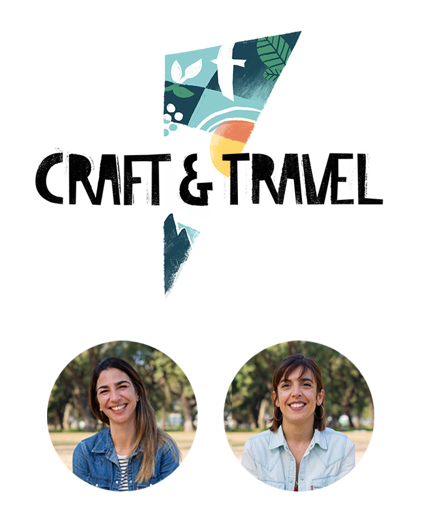

Who we are
Across the region, our work is rooted in craft, creativity and our own personal passions as experienced travellers ourselves. From our signature journeys through to homespun trajectories, we believe in the idea of travel with purpose. We go well beyond surface-level sightseeing to offer a more affectionate engagement with our local cultures, societies and landscapes. Covering all the major territories in Argentina and Chile, our journeys are the product of our expertise as well as a conviction of the need to enrich the lives of everyone involved in the tourism chain: locals, partners and travellers alike. We work conscientiously with open ears and big hearts, and a commitment to the transformation and betterment of our industry.Travel agents Ana and Alina bring over 15 years’ experience in inbound tourism and hospitality in Argentina and Chile. Having shared many a trip to the heart of both countries, as former workmates and friends, they boast a deep and synchronized understanding of the idiosyncrasies and complexities that define our region. Born to migrant families, their approach to tourism in Argentina and Chile is defined by curiosity and hard work, with their own personal passions interlaced into all the packages and tours we offer.
How it all began
"Alina and I were sitting at a coffee shop in Copenhagen. We realized that everything we’d done so far on our trip to Europe was rooted in our passions and hobbies. I had done a painting course in Rome while Alina had learned to make dough in France. This was the way forward for us in the travel industry and we could now create a space in Argentina and Chile for travellers to expand and enrich the activities that fulfil their daily lives back home."
- Ana
<< Go back